2.3. Sitecore Experience Platform のインストール¶
Sitecore Experience Platform 10.0 をインストールするために、Sitecore Instllation Assistant を利用して、まずは関連モジュールをインストールします。
今回は以下の環境にインストールをします。
Windows Server 2019 Standard
SQL Server 2019
2.3.1. Sitecore のインストールプログラムの入手¶
今回は Sitecore Install Assistant を利用してインストールを進めていきます。このため、以下の Web サイトからインストールファイルをダウンロードしてください。
Download options for On Premises deployment のグループにある Graphical setup package for XP Single をダウンロードしてください。インストールファイルのダウンロードが完了した、ファイルを展開して次のステップに進みます。
2.3.2. モジュールのインストール¶
この手順に関しては、１つの環境で初回のみ実行するだけで完了です。すでに別の Sitecore をインストールしている場合は、スキップしてください。
Sitecore Install Assistant を立ち上げます。これはダウンロードをしたファイルを展開してください。ここでは、 c:\projects\sif に展開します。
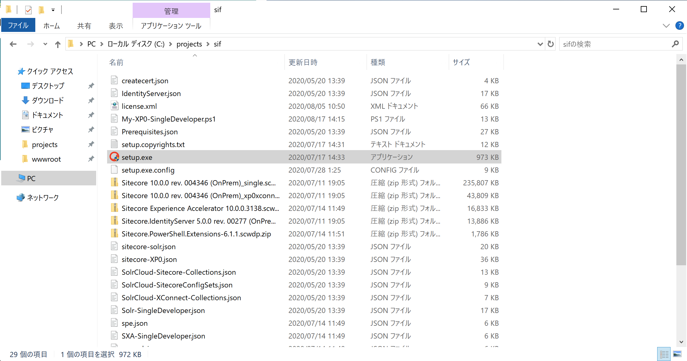{kind=link}
setup.exe をダブルクリックすると、インストーラーが立ち上がり以下のような画面となります。
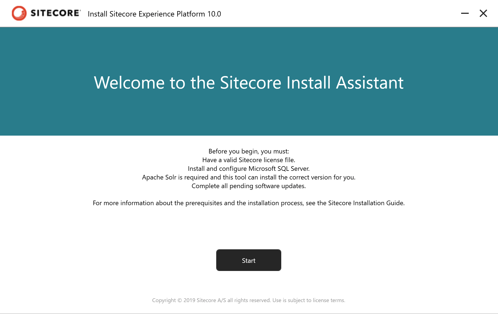{kind=link}
Start のボタンをクリックすると、モジュールのインストール画面になります。
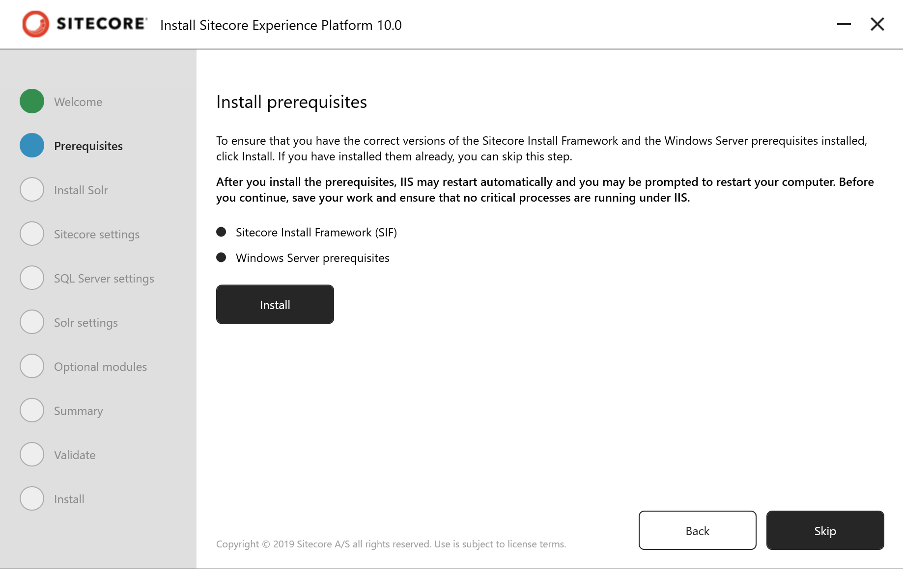{kind=link}
Install のボタンをクリックして、必要なモジュールをインストールしてください。

インストールが完了すると、Close のボタンが有効になります。
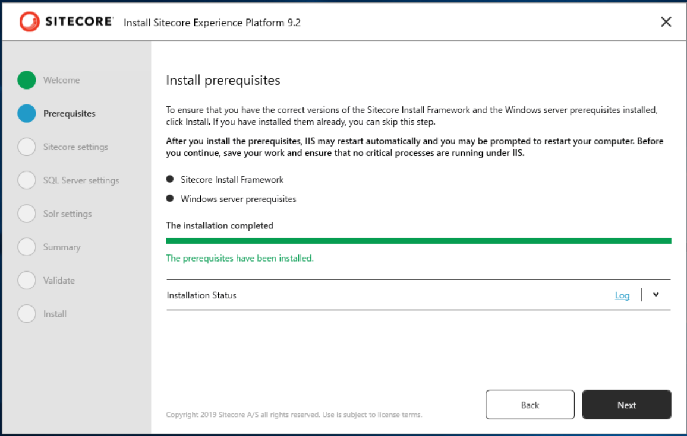{kind=link}
一度ダイアログを閉じてください。
インストールアシスタントでインストールをする場合、.NET Core 2.1.15 のライブラリがインストールされます。 Sitecore 10.0 では .NET Core 2.1.18 以降を利用することが推奨されているため、 ここでモジュールをダウンロード、インストールしてください。2.1.18 以降で Hosting Bundle を選択します。
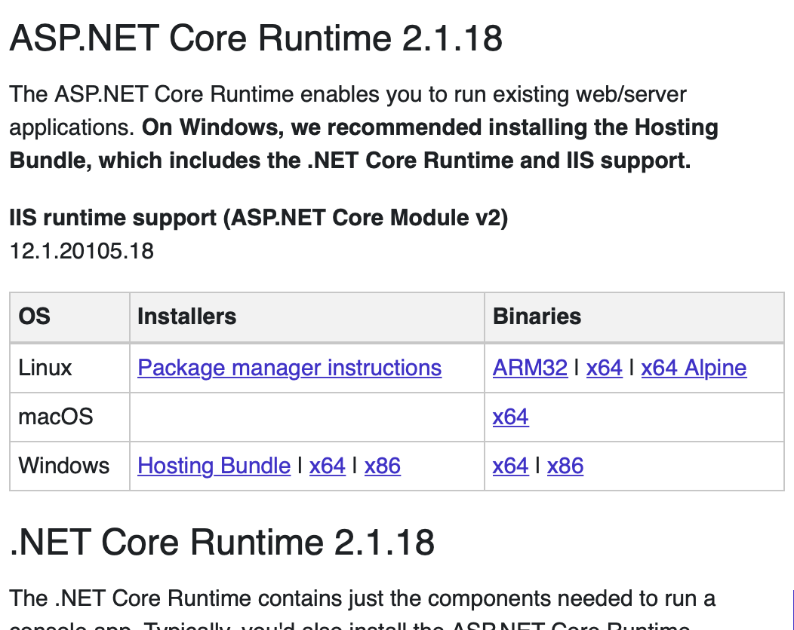{kind=link}
インストールが完了したあと、先ほど一度再起動が必要となっていますので、再起動します。
2.3.3. Solr のインストール¶
改めてインストールアシスタントを起動します。インストールコンポーネントの手順はスキップして、Solr のインストールの画面に進みます。
ここでは Solr の prefix およびインストールパスを指定してください。
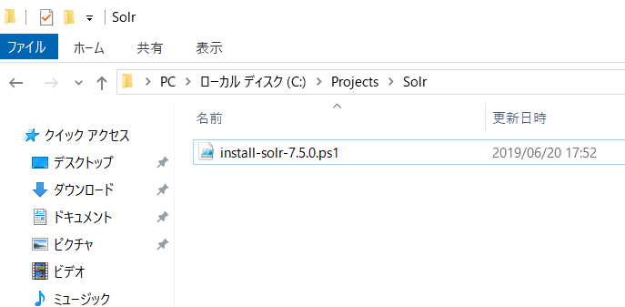{kind=link}
インストールを実行します。
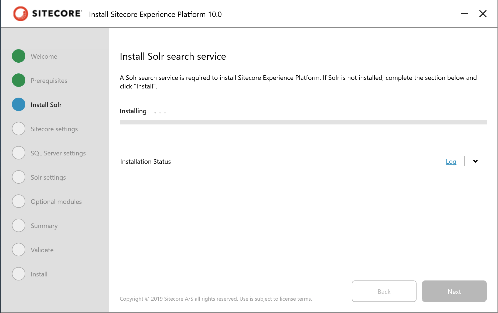{kind=link}
インストールが完了すると、Solr がサービスとして起動します。
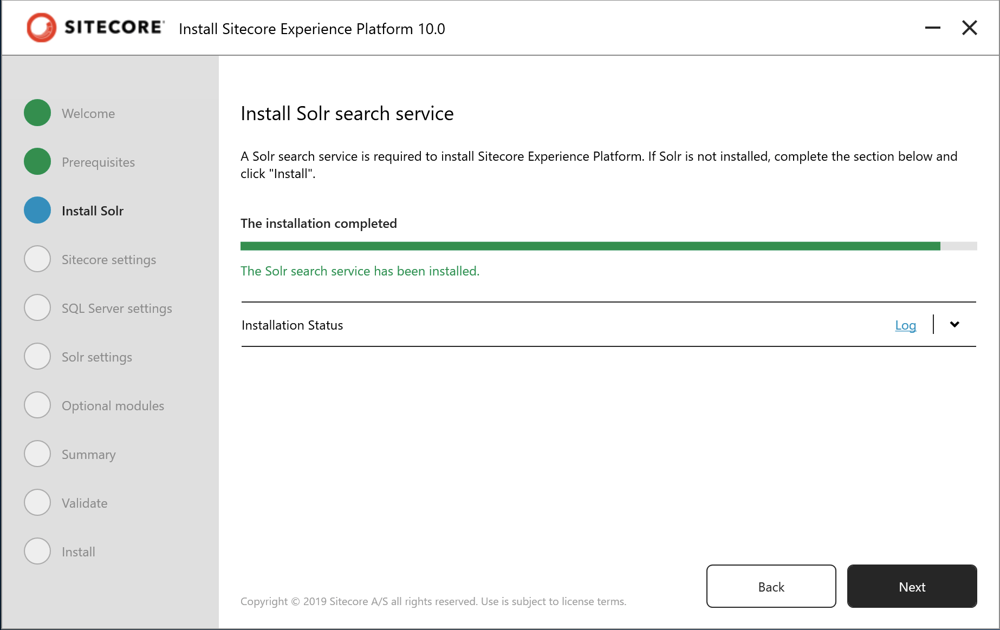{kind=link}
2.3.4. インストールの開始¶
モジュールのインストールが完了すると、次は Sitecore のインストールとなります。
まず最初に、Sitecore をインストールする時の Prefix、管理者のパスワードおよびライセンスファイルを指定します。
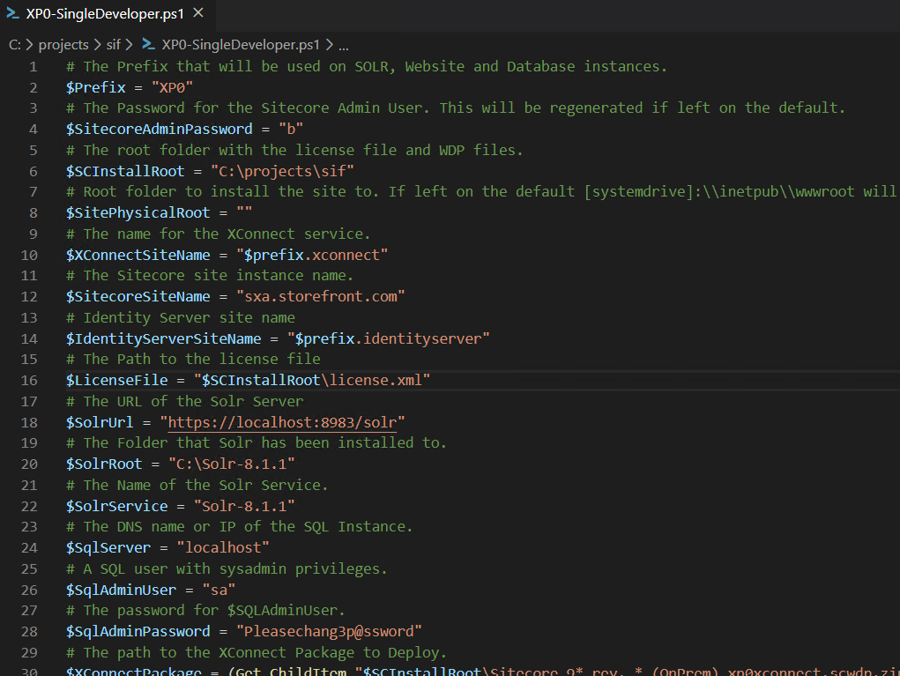{kind=link}
インストールを実行します。
続いて、SQL Server の設定を記入します。
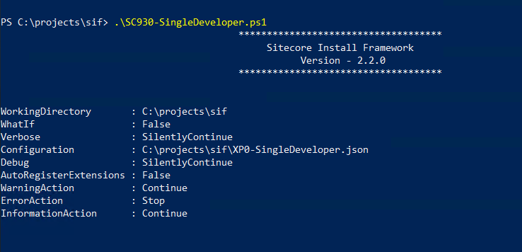{kind=link}
インストールした Solr に関する設定があっているか確認をします。
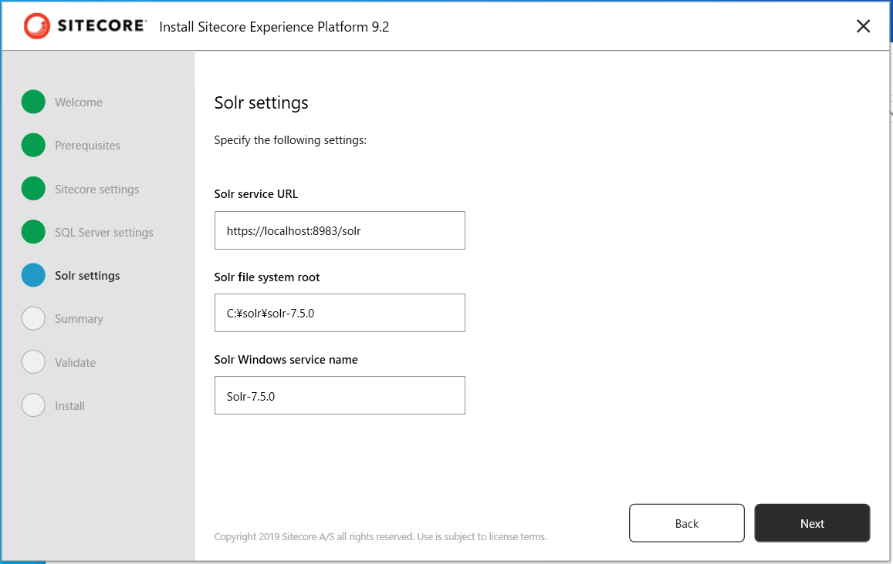{kind=link}
SXA のモジュールも一緒にインストールするか確認をします。
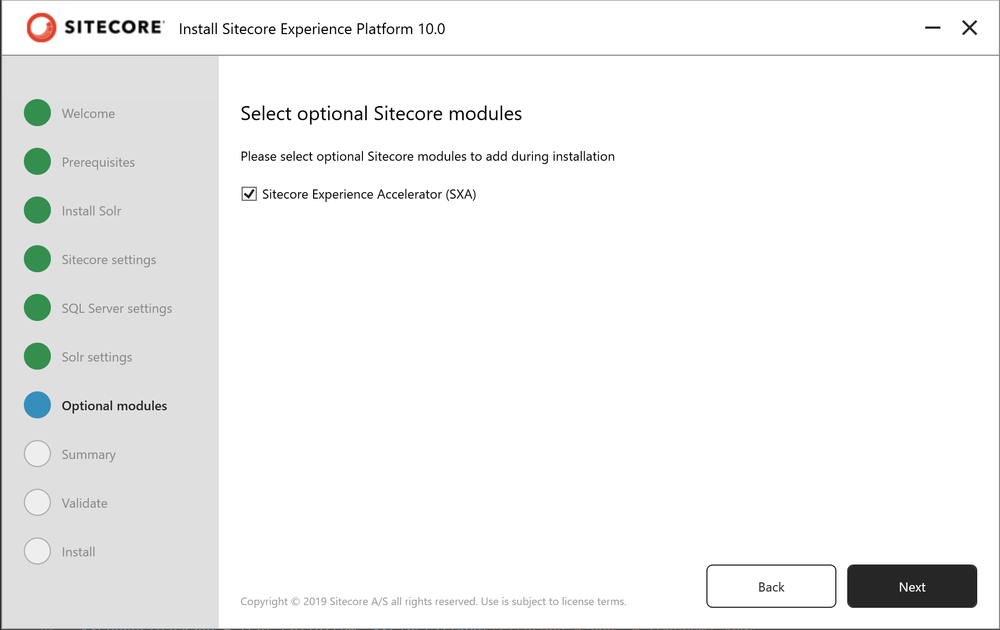{kind=link}
インストールに関する設定項目の最終確認をします。
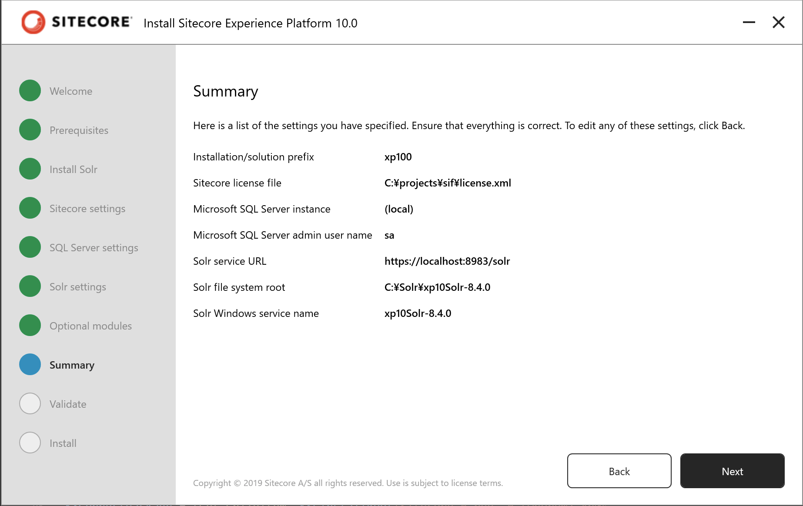{kind=link}
設定が正しいか、検証が実行されます。
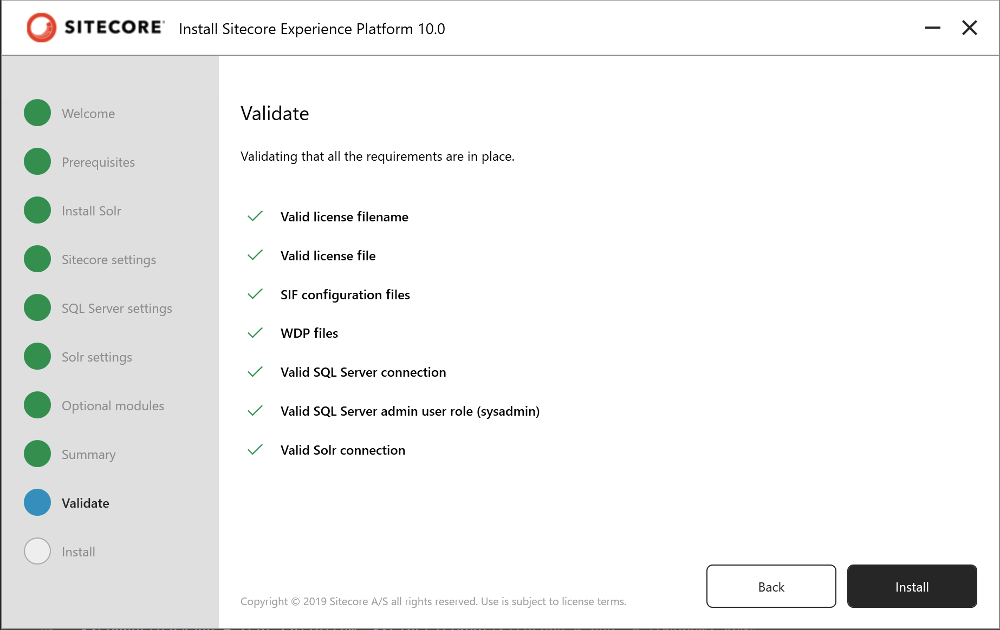{kind=link}
以下の画面が表示されれば、インストールが無事完了します。
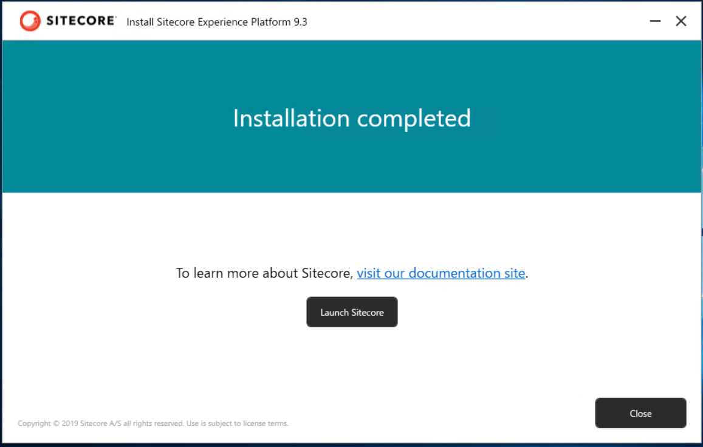{kind=link}